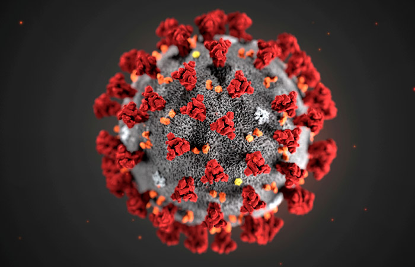

Новости

ПО СОСТОЯНИЮ НА 10:00 19 ОКТЯБРЯ ВСЕГО 5 278 ЗАРЕГИСТРИРОВАННЫХ И ПОДТВЕРЖДЕННЫХ СЛУЧАЕВ ИНФЕКЦИИ COVID-19 НА ТЕРРИТОРИИ ДОНЕЦКОЙ НАРОДНОЙ РЕСПУБЛИКИ
Министерство здравоохранения ДНР информирует, что 18 октября исследования на заболевание COVID-19 не проводились в связи с тем, что лаборатория находилась на санобработке.
На прошлой неделе в Донецке родилось 82 малыша
В период с 12 по 18 октября в Донецке родилось 82 малыша: 43 мальчика и 39 девочек.
В том числе одна двойня у семьи из Куйбышевского района – девочки.
Поздравляем счастливые семьи с пополнением, а малышам желаем крепкого здоровья и мирного неба над головой!
Виталий Наливкин поставил на место шашлычников
В Пролетарском районе был предотвращен крупный лесной пожар по причине неосторожного обращения с огнём.
Внимание! Отключение холодной воды
По информации ГП «ВОДА ДОНБАССА», в связи с проведением аварийно-ремонтных работ на водоводе на водопроводном узле 6 Красная Звезда, с 13:00 15.10.2020 до окончания ремонтных работ будет остановлена подача холодной воды потребителям Пролетарского района по улицам Щетинина, Прожекторная, Раздольная и г. Моспино.

В Донецкой Народной Республике была обнаружена самая красивая кошечка. Жители в восторге от умиления
Жители обнаружили ДНР самого милую кошечку недалеко от Крытого рынка. Она просто сидела и мяукала.
ГОСТРУД ДНР НАПОМИНАЕТ О НЕДОПУСТИМОСТИ НАРУШЕНИЯ ТРУДОВЫХ ПРАВ РАБОТНИКОВ ПРИ ДИСТАНЦИОННОМ РЕЖИМЕ ВЫПОЛНЕНИЯ ТРУДОВЫХ ОБЯЗАННОСТЕЙ
Порядок организации дистанционного режима исполнения работниками трудовых обязанностей на территории Донецкой Народной Республики утвержден Указом Главы Донецкой Народной Республики от 14 апреля 2020 г. № 84.